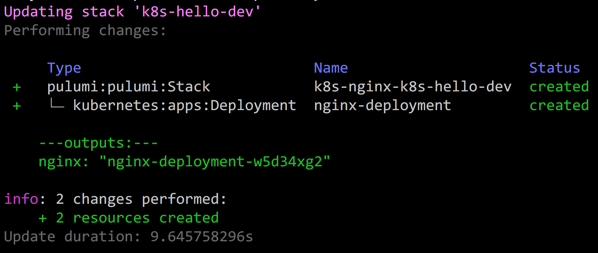
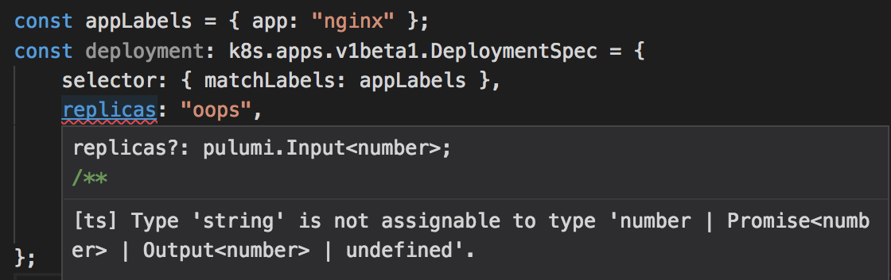
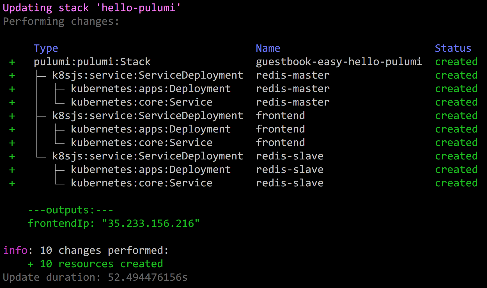
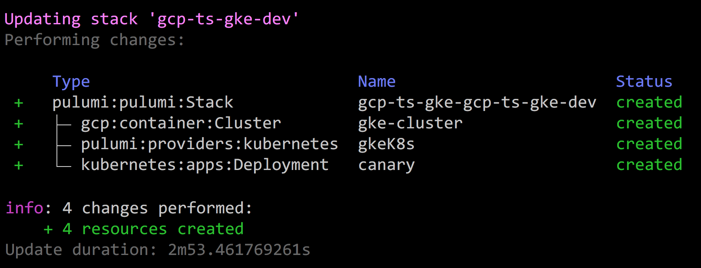
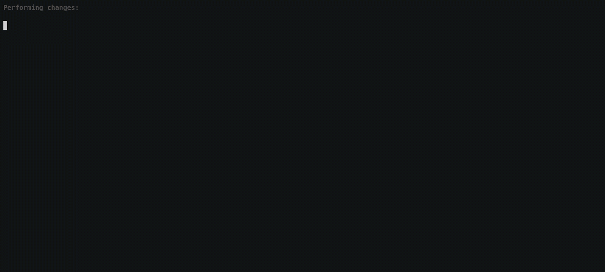

Program Kubernetes with 11 Pulumi Pearls

In this post, we’ll take a look at 11 “pearls” – bite-sized code snippets – that demonstrate using Pulumi to build and deploy Kubernetes applications using cloud native infrastructure as code. These pearls are organized into three categories, each demonstrating a unique scenario:
- Config as Real Code: Use your favorite language for authoring applications and configuration, eliminating toil and YAML.
- Multi-Cloud Infrastructure: Mix cloud services alongside Kubernetes resources and manage them using one set of tools and workflows.
- Software Delivery as Code: Perform sophisticated continuous delivery of your Kubernetes deployments – including canaries, staged rollouts, leveraging cloud native projects like Envoy and Prometheus – authored in real code.
Here is a complete index of the pearls below, in case you want to jump around a little:
- Define Kubernetes Applications in a Real Language
- More Expressiveness, Less Boilerplate
- Inject Envoy Sidecars Using Abstraction
- Adopt Existing Kubernetes YAML
- Programmatically Deploy Helm Charts as Code
- Declare Cloud Resources Alongside Kubernetes Ones
- Provision and Use Kubernetes Clusters in Any Cloud
- Build and Deploy Container Images Alongside Configuration Updates
- Robust and Repeatable Deployments, with a Notion of “Done”
- Trigger Cascading Rollouts from Dependent Updates
- Staged Application Rollouts Gated by Prometheus Checks
Config as Real Code
The default authoring experience for Kubernetes applications is in YAML, similar to other infrastructure as code solutions. These configuration files can quickly grow out of hand due to the lack of basic facilities like for loops, functions, and classes, leading to copy-and-paste, lots of boilerplate, and plenty of frustration.
YAML is a fine “assembly language” for computers to read – but it was never meant to be a programming language for humans to write. After even the most basic level of complexity, you’ll soon have accidentally encoded critical software architecture decisions in YAML, where as software developers we prefer to write and maintain such things in code.
Using a real language brings productivity and joy to development, but more concretely also unlocks the ability to codify and enforce best practices, and to share and reuse them within your team or the community. This is something that simply isn’t possible with YAML.
Pulumi supports the full Kubernetes API and lets you author and deploy resources in code.
1. Define Kubernetes Applications in a Real Language
Let’s begin by seeing what defining Kubernetes applications in a real language looks like. The full Kubernetes API is available, just in code instead of YAML. A simple program looks like so:
import * as k8s from "@pulumi/kubernetes";
const appLabels = { app: "nginx" };
const deployment = new k8s.apps.v1.Deployment("nginx-deployment", {
spec: {
replicas: 1,
selector: { matchLabels: appLabels },
template: {
metadata: { labels: appLabels },
spec: { containers: [{ name: "nginx", image: "nginx:1.7.9" }] }
}
}
});Indeed, if you run the pulumi new kubernetes-typescript command to
create a basic project from the Kubernetes TypeScript template, this is
what you’ll get.
With this program in hand, we can run pulumi up and it will evaluate
our program to compute the desired outcome, show us a preview, and then
make it so. Remember, Pulumi is based on the concept of infrastructure
as code; despite us using an imperative language, the code declares a
goal state that Pulumi understands and converges towards, in a reliable
way:

Notice we are using TypeScript. This gives us great IDE support and compile-time checking for common mistakes. (Pulumi is multi-language and doesn’t mind what language runs at runtime.) For example, if I accidentally enter a string for the replica count, I get instant IDE feedback:

From here, we can make changes to our program – like changing Nginx
from 1.7.9 to 1.8 – and then rerun pulumi up . It will compute the
minimal set of changes to bring the running application in line with our
new desired state, show us a diff, and ask if we’d like to proceed:

Selecting yes will carry out the update:

At this point, we’ve seen that we can gain some advantages from infrastructure as real code (like good IDE support and the use of a variable to avoid repeating ourselves for appLabels ). But let’s now see some more compelling reasons why this is so great.
2. More Expressiveness, Less Boilerplate
[ Code ]
We’ve all seen the canonical Kubernetes guestbook application that uses PHP, Nginx, and Redis. We have the same tutorial written in Pulumi. But the basic conversion from YAML to TypeScript leaves something to be desired; namely, it’s equally as verbose, feels a little too “low level” for an application definition, and misses opportunities to reduce repetition.
This is where languages can rescue us. We can recognize the common pattern of a Deployment for a container followed by a Service to expose that container, optionally behind a load balancer with a stable IP address. This has led us to define the simple ServiceDeployment class.
The definition of this class is interesting to ponder – particularly because, being a language, we can define arbitrary functions and classes to encode our own best practices and common patterns – however, the vast simplification to the guestbook itself is the best part:
import * as k8sjs from "./k8sjs";
let redisMaster = new k8sjs.ServiceDeployment("redis-master", {
image: "k8s.gcr.io/redis:e2e",
ports: [ 6379 ]
});
let redisSlave = new k8sjs.ServiceDeployment("redis-slave", {
image: "gcr.io/google_samples/gb-redisslave:v1",
ports: [ 6379 ]
});
let frontend = new k8sjs.ServiceDeployment("frontend", {
replicas: 3,
image: "gcr.io/google-samples/gb-frontend:v4",
ports: [ 80 ],
loadBalancer: true,
});
export let frontendIp = frontend.ipAddress;The end result of having three Deployments, three Services, the frontend being load balanced, is the same. But we have gone from the original guestbook YAML of 147 lines down to 20. Not only that, but the code is much simpler to understand, and easier to maintain and evolve.
The deployment workflow is similar to using the raw resources, with a
simple pulumi up, and we can see the underlying resources expanded in
a tree view during our update:

Notice that the frontend’s allocated IP is printed here thanks to the
export line:
$ curl http://$(pulumi stack output frontendIp)
<html ng-app="redis">
<head>
<title>Guestbook</title>
...
3. Inject Envoy Sidecars Using Abstraction
Before moving on, let’s see another powerful example of how abstraction can help us to do useful things. In this pearl, we’ll see how to inject sidecars. A sidecar is a microservices pattern whereby a container runs alongside another collection of containers to add some kind of value, like logging, proxying, or gathering and reporting on performance information. The sidecar pattern is particularly powerful in Kubernetes thanks to its Pod abstraction.
Sidecars, and other best practices and standard patterns, are easy to express in code. This is a simple extension of pearl #2 above, where we can use abstraction to hide complex details.
To see this in action, let’s define a simple EnvoyDeployment class
that adds a sidecar to any Kubernetes Deployment object:
export class EnvoyDeployment extends k8s.apps.v1.Deployment {
constructor(name: string,
args: k8stypes.apps.v1.Deployment,
opts?: pulumi.CustomResourceOptions) {
const pod = args.spec.template.spec;
// Add an Envoy sidecar container.
pod.containers = pod.containers || [];
pod.containers.push({
name: "envoy",
image: "lyft/envoy:latest",
command: ["/usr/local/bin/envoy"],
args: [
"--concurrency 4",
"--config-path /etc/envoy/envoy.json",
"--mode serve"
],
ports: [{ containerPort: 80, protocol: "TCP" }],
resources: {
limits: { cpu: "1000m", memory: "512Mi" },
requests: { cpu: "100m", memory: "64Mi" }
},
volumeMounts: [{ name: "envoy-conf", mountPath: "/etc/envoy" }]
});
// Add an associated Volume for Envoy's config, mounted as a ConfigMap.
pod.volumes = pod.volumes || [];
pod.volumes.push({
name: "envoy-conf", configMap: { name: "envoy" },
});
super(name, args, opts);
}
}Now, anytime we create an EnvoyDeployment , we will automatically get an Envoy sidecar attached to it, and we don’t need to remember every time how to properly configure it:
const appLabels = { app: "nginx" };
const deployment = new EnvoyDeployment("nginx", {
spec: {
selector: { matchLabels: appLabels },
template: {
metadata: { labels: appLabels },
spec: { containers: [{ name: "nginx", image: "nginx" }] }
}
}
});Of course, we can do the same with Prometheus or any other project requiring sidecars, and we envision possibly having a more general sidecar injection mechanism, thanks to real languages. In fact, we could define a base class that our entire organization uses with certain sidecars baked in, updated easily in one place and rolled out using package managers.
4. Adopt existing Kubernetes YAML
It’s wonderful that we can use real languages, but there’s already lots of YAML in the world. Pulumi lets us process that YAML dynamically, and adopt it on the fly to become part of our Pulumi program, without even needing to change it. This enables multi-cloud and advanced delivery scenarios, in addition to being a great way to incrementally convert your existing code.
For instance, let’s imagine we want to deploy the standard Kubernetes Guestbook example directly from the official YAML files, and make its public IP easily accessible:
import * as k8s from "@pulumi/kubernetes";
// Create resources from standard Kubernetes Guestbook YAML example.
const guestbook = new k8s.yaml.ConfigGroup(
"guestbook", { files: "guestbook/*.yaml" });
// Export the (cluster-private) IP address of the Guestbook frontend.
export const frontendIp =
guestbook.getResource("v1/Service", "frontend").
spec.apply(spec => spec.clusterIP);This slurps up all the YAML files underneath the guestbook directory,
creates the desired goal state out of them, and gives the same CLI
experience shown earlier with diffs and deployments.
5. Programmatically Deploy Helm Charts as Code
The same is true of Helm Charts, an increasingly popular way to distribute entire Kubernetes applications. Let’s say we want to deploy the latest stable Wordpress Helm Chart, and, again, expose its public IP so that it’s easily accessible to us after deployment:
import * as k8s from "@pulumi/kubernetes";
// Deploy the latest version of the stable/wordpress chart.
const wordpress = new k8s.helm.v2.Chart("wordpress", {
repo: "stable",
version: "2.1.3",
chart: "wordpress"
});
// Export the public IP for Wordpress.
export const frontendIp =
wordpress.getResource("v1/Service", "wpdev-wordpress").
status.apply(status => status.loadBalancer.ingress[0].ip);The resulting Pulumi program can be deployed using pulumi up in the
usual way:

An even more exciting example that highlights mixing cloud resources alongside a Helm Chart, check out our example that creates a MEAN stack that uses Azure CosmosDB as the storage layer for an otherwise ordinary Helm Chart, alleviating the burden of needing to worry about persistent volumes, stateful services, and the associated backup and operational difficulties.
For added fun, we can even inspect or rewrite the resulting resource
graph on the fly, using the transforms parameter, for both YAML
configuration and Helm Charts. This lets us validate conforming
configuration, inject sidecars automatically, and more.
Multi-Cloud Infrastructure
Kubernetes applications seldom live on an island by themselves. They typically rely on other cloud infrastructure, as we’ve just seen. This spans a long list of possibilities, for instance:
- Data services: AWS S3, Google BigTable, Azure CosmosDB
- AI services: speech recognition, image classification, training algorithms
- Hosted services: MySQL, Redis, Map/Reduce
- Container registries: ECR, ACR, GCR, Docker Hub, JFrog Artifactory
In addition to the very infrastructure hosting the underlying Kubernetes cluster itself, such as the underlying networking and cluster resources (AKS, EKS, GKE), or compute resources for on-premise clusters (VMWare, OpenStack, etc).
Most of us today use different YAML dialects for Kubernetes applications and the other cloud infrastructure, and then end up needing to stitch together different tools using ad-hoc Bash or Python scripts. This is hardly robust and leads to significant toil and tricky failure modes.
Pulumi, on the other hand, can provision and manage the full set of resources mentioned in the above examples, using the same programming model, language, and tools and workflow.
6. Declare Cloud Resources Alongside Kubernetes Ones
Let’s say that we want an AWS S3 Bucket for our Kubernetes application to use. This sounds basic – and indeed happens all the time – but is surprisingly difficult with today’s tools.
Normally we’d find ourselves clicking around in the AWS console to create one, writing AWS CloudFormation YAML and deploying it using AWS, or cobbling together Terraform DSL scripts that are deployed independently from our Kubernetes object definitions themselves. This leaves us having to orchestrate multiple tools and services that were never designed to work together.
Instead of doing that, we can simply author a single TypeScript program
that does it all in one go. Pulumi offers packages for AWS, Azure,
Google Cloud, and other clouds. We can then use a single CLI invocation,
pulumi up, to provision and update all of it:
import * as aws from "@pulumi/aws";
import * as k8s from "@pulumi/kubernetes";
const appName = "nginx";
// nginx config stored in an S3 bucket.
const config = new aws.s3.Bucket(`${appName}-config`);
// nginx container, replicated 1 time.
const appLabels = { app: appName };
const nginx = new k8s.apps.v1beta1.Deployment(appName, {
spec: {
selector: { matchLabels: appLabels },
replicas: 1,
template: {
metadata: { labels: appLabels },
spec: {
initContainers: [nginxConfigPuller(config.bucketDomainName)],
containers: [{ name: appName, image: "nginx:1.15-alpine" }]
}
}
}
});Pulumi understands the full dependency graph between resources, and so the deployment of the AWS bucket will be orchestrated properly with respect to the Kubernetes resources. In the event that a subsequent update alters the bucket – for instance, perhaps a new domain name is assigned – Pulumi will know how to cascade those changes to Kubernetes automatically.
7. Provision and Use Kubernetes Clusters in Any Cloud
[ Code ]
In addition to all the usual resources your application might use, you can also provision actual Kubernetes clusters using Pulumi programs. This has become much easier recently thanks to Google’s Kubernetes Engine (GKE), Azure’s Kubernetes Service (AKS), and AWS’s Elastic Kubernetes Service (EKS), which offer hosted solutions at a reasonable cost. Of course, it’s possible to use Pulumi programs to provision custom and on-premise clusters too.
Another thing Pulumi can do is manage an actual cluster and its application resources in a single program. It’s common to separate programs into low-level infrastructure and higher-level applications in the move to production – especially for cost, team roles and responsibilities, etc. – but it’s a game changer for simple cases where as a developer you just want to get up and running quickly without thinking deeply about the clustering underneath. More importantly, you have one set of languages, tools, and workflows for all application infrastructure.
For example, here is a program that deploys a GKE cluster with configurable settings:
import * as gcp from "@pulumi/gcp";
import { nodeCount, nodeMachineType, password, username } from "./config";
const engineVersion = gcp.container.getEngineVersions().then(v => v.latestMasterVersion);
export const k8sCluster = new gcp.container.Cluster("gke-cluster", {
initialNodeCount: nodeCount,
minMasterVersion: engineVersion,
nodeVersion: engineVersion,
masterAuth: { username, password },
nodeConfig: {
machineType: nodeMachineType,
oauthScopes: [
"https://www.googleapis.com/auth/compute",
"https://www.googleapis.com/auth/devstorage.read_only",
"https://www.googleapis.com/auth/logging.write",
"https://www.googleapis.com/auth/monitoring"
],
},
});Imagining that this was defined in a cluster.ts module, we can deploy
a canary deployment on top of that cluster using the same program:
import * as k8s from "@pulumi/kubernetes";
import * as pulumi from "@pulumi/pulumi";
import { k8sProvider, k8sConfig } from "./cluster";
// Create a canary deployment to test that this cluster works.
const name = `${pulumi.getProject()}-${pulumi.getStack()}`;
const canaryLabels = { app: `canary-${name}` };
const canary = new k8s.apps.v1beta1.Deployment("canary", {
spec: {
selector: { matchLabels: canaryLabels },
replicas: 1,
template: {
metadata: { labels: canaryLabels },
spec: { containers: [{ name, image: "nginx" }] },
},
},
}, { provider: k8sProvider });
// Export the Kubeconfig so that clients can easily access our cluster.
export let kubeConfig = k8sConfig;The incredible thing about this example is that, with it, we simply run pulumi up, and a little over two minutes later, we have a fully functioning GKE cluster with a canary deployment up and running:

In addition to the GKE example, our examples repo also has fully functioning examples for doing the same thing with Azure’s AKS and AWS’s EKS. A Kubernetes cluster for everybody!
8. Build and Deploy Container Images Alongside Configuration Updates
One scenario we often encounter in practice is the need to coordinate
Docker registry provisioning and management (using one set of tools),
with building and pushing new Docker images (using another set of
tools), with updating Kubernetes configuration to consume said images
(using yet another set of tools). Pulumi can handle doing all three
things in code, using just the pulumi up command to manage your
container registry infrastructure, build and push images, and update
your Kubernetes objects to consume those freshly published images.
This example builds and pushes a custom Nginx image to the Docker Hub and then consumes it from a Kubernetes Deployment:
import * as docker from "@pulumi/docker";
import * as k8s from "@pulumi/kubernetes";
import * as pulumi from "@pulumi/pulumi";
const config = new pulumi.Config();
// Build a Dockerfile located at ./mynginx in my project.
// Publish it to the Docker Hub using the configured username/password.
const mynginx = new docker.Image("mynginx", {
build: "./mynginx",
imageName: "hekul/mynginx:v1",
registry: {
server: "docker.io",
username: config.require("dockerUsername"),
password: config.require("dockerPassword"),
},
});
// Deploy an app container that consumes the resulting image name.
const appLabels = { app: appName };
const nginx = new k8s.apps.v1beta1.Deployment(appName, {
spec: {
selector: { matchLabels: appLabels },
replicas: 1,
template: {
metadata: { labels: appLabels },
spec: {
// Use the app container at the specific SHA pushed.
containers: [{
name: appName,
image: mynginx.imageName,
}],
}
}
}
});Although this example uses the Docker Hub, this technique works great for all of the major cloud providers’ container registries: Amazon ECR, Azure ACR, and Google GCR. Keep an eye out on our examples repo for examples of these soon, or let us know what you’d like to see.
Software Delivery as Code
In this final section, we’ll turn our attention away from authoring, and towards operating. Namely, how to achieve robust continuous deployment (CD) of your Kubernetes applications.
Pulumi takes an “everything is code” approach so, in addition to your infrastructure being written in real code, your software delivery pipeline is too. In fact, each Pulumi program really is a deployment workflow expressed in code. The Pulumi CLI is responsible for evaluating programs, producing goal states, diffing states to produce plans, and carrying them out. The Pulumi hosted service at https://app.pulumi.com is used for robust concurrency and state management so that deployments can be done continuously in a team environment, with perfect auditability of who changed what and when, and so that deployments are repeatable and failures recoverable.
Let’s look at a few particularly useful scenarios when using Pulumi for Kubernetes deployments.
9. Robust and Repeatable Deployments, with a Notion of “Done”
[ Code ]
Kubernetes is amazing at container orchestration and running reliable distributed systems. Its primary CLI, kubectl, offers many features for doing basic deployments and rollouts, and the cluster management software itself handles rolling updates. kubectl deliberately leaves more sophisticated deployment “policy” as an exercise outside of the core system, however. This is a noteworthy and agreeable decision, because the foundational CLI must provide robust mechanisms based on eventual consistency and fault tolerance, its most critical underpinnings.
For practical deployments, we often need more opinionated policy on top of these mechanisms, and that is where a tool like Pulumi that does deployment orchestration can help. Pulumi adds the ability to preview updates before applying them (with full diffing); the ability to know when a deployment has succeeded or failed and why; canaries, blue/green, flighting-based rollouts, and more. Pulumi’s CLI has been developed with real world scenarios in mind.
Let’s consider the following program, which deploys Nginx to a Kubernetes cluster using the standard Kubernetes object model, and allocates a public IP address to it:
import * as k8s from "@pulumi/kubernetes";
// nginx container, replicated 1 time.
const appName = "nginx";
const appLabels = { app: appName };
const nginx = new k8s.apps.v1beta1.Deployment(appName, {
spec: {
selector: { matchLabels: appLabels },
replicas: 1,
template: {
metadata: { labels: appLabels },
spec: { containers: [{ name: appName, image: "nginx:1.15-alpine" }] }
}
}
});
// Allocate a public IP to the nginx Deployment.
const frontend = new k8s.core.v1.Service(appName, {
metadata: { labels: nginx.spec.apply(spec => spec.template.metadata.labels) },
spec: {
type: "LoadBalancer",
ports: [{ port: 80, targetPort: 80, protocol: "TCP" }],
selector: appLabels
}
});
// When "done", this will print the public IP.
export const frontendIp = frontend.status.apply(
status => status.loadBalancer.ingress[0].ip);This code looks a lot like the prior examples, but let’s double click into the CLI experience when deploying it. Out of the box, Pulumi provides several real world niceties.
First, pulumi up will wait for all resources to be initialized before
completing. This gives a notion of done, and allows us to see status
updates and any errors that result. kubectl intentionally doesn’t do
this because it relies on eventual consistency and the idea that
deployments will eventually converge. This is a robust and reliable
foundation, but as developers, we often want richer monitoring. This
leads to bash scripts and frequent polling, with hard to diagnose
events.
For instance, if we specify an invalid image, we’ll see fine-grained status errors as they arise:

This allows us to “export” values from the completed resources, which gives a way to elevate the most important output values. In the last line, we see that we’re exporting the public IP address allocated to the Nginx Pod. This allows us to use this IP address as a value:
Finally, in true infrastructure as code fashion, Pulumi works on the
notion of goal states. This means it can always diff the desired goal
state with whatever is currently deployed to a cluster. That is shown as
part of the typical pulumi up sequence, but the
pulumi preview --diff command shows a more “Git-like” diff of the full
resource graph. In this example, we’ve changed our container image from
nginx:15-alpine to nginx:16-alpine:
The ability to look at previews before making an update ensures mistakes don’t get made and that deployments don’t have unanticipated impacts. There is even a Pulumi GitHub App that will show such diffs inside of pull requests before they’ve been deployed, so you know the impact of configuration changes before code even makes its way to master.
10. Trigger Cascading Rollouts from Dependent Updates
[ Code ]
Although it’s not strictly “deployment orchestration”, there are some useful things Pulumi does out of the box when deciding how and when to update resources. Namely, its engine has a full understanding of the resource graph (technically, a DAG), which lets it cascade updates to multiple resources that depend on one another. This is often be as simple as feeding the output of some Kubernetes object as input to another programmatically, so that when you update one you don’t also forget to update the other. Pulumi orchestrates operations in the right order.
In this example, however, we’ll look at a specific example, where this cascading can be useful. Imagine we are using a ConfigMap to store the value for an Nginx Deployment’s config file. There are various ways we could map that ConfigMap and do hot reloads of it, but let’s say we just want to do the simpler thing of triggering a deployment anytime that config changes. Pulumi can handle this automatically, simply based on the dependencies between resources:
import * as fs from "fs";
import * as k8s from "@pulumi/kubernetes";
const appName = "nginx";
const appLabels = { app: appName };
// nginx Configuration data to proxy traffic to `pulumi.github.io`.
// Read from `default.conf` file.
const nginxConfig = new k8s.core.v1.ConfigMap(appName, {
metadata: { labels: appLabels },
data: { "default.conf": fs.readFileSync("default.conf").toString() }
});
const nginxConfigName = nginxConfig.metadata.apply(m => m.name);
// Deploy 1 nginx replica, mounting the configuration data into the container.
const nginx = new k8s.apps.v1beta1.Deployment(appName, {
metadata: { labels: appLabels },
spec: {
replicas: 1,
template: {
metadata: { labels: appLabels },
spec: {
containers: [{
name: "nginx",
image: "nginx:1.13.6-alpine",
volumeMounts: [{
name: "nginx-configs",
mountPath: "/etc/nginx/conf.d",
}].
}],
volumes: [{
name: "nginx-configs",
configMap: { name: nginxConfigName },
}],
},
},
}
});Notice here that we’re just reading a file from our local project workspace to supply as the default.conf data. The end result is that all we need to do is update that config file, rerun pulumi up , and it will detect that the ConfigMap changed, perform those changes, and then cascade the updates to the Deployment such that it ingests those changes:
11. Staged Application Rollouts Gated by Prometheus Checks
[ Code ]
As we start to go deeper into these scenarios, we’re beginning to see that Pulumi is useful not only for expression of application configuration, but also for deployment orchestration. Because a Pulumi program is arbitrary code, we can do useful things in the middle of updates.
In this example, we’ll use this capability to rendezvous with Prometheus to gate our deployment with health checks. In particular, we will first deploy a basic 3-replica canary, ask Prometheus to check health metrics, and then once the P90 response time is looking good, we’ll advance our deployment to a full blown 10-replica deployment.
Let’s check out the code. It looks like a usual Pulumi program, except that we use a promise from the Prometheus health checks as input to the staging ring deployment, which has the effect of making it dependent on the resolution of said health checks:
// Canary ring. Replicate instrumented Pod 3 times.
const canary = new k8s.apps.v1beta1.Deployment(
"canary-example-app",
{ spec: { replicas: 1, template: instrumentedPod } },
{ dependsOn: p8sDeployment }
);
// Staging ring. Replicate instrumented Pod 10 times.
const staging = new k8s.apps.v1beta1.Deployment("staging-example-app", {
metadata: {
annotations: {
// Check P90 latency is < 20,000 microseconds. Returns a `Promise<string>` with the P90
// response time. It must resolve correctly before this deployment rolls out. In
// general any `Promise<T>` could go here.
"example.com/p90ResponseTime": util.checkHttpLatency(canary, containerName, {
durationSeconds: 30,
quantile: 0.9,
thresholdMicroseconds: 20000,
prometheusEndpoint: `localhost:${localPort}`,
})
}
},
spec: { replicas: 1, template: instrumentedPod }
});If we run this with a pulumi up, the deployment will proceed as usual,
but we will see intermediate output telling us at what stage our
deployment is at any given time. Most of the time will be spent waiting
on Prometheus, but then we’ll see the final deployment scale out –
assuming our canary passed the health checks, of course!

Wrapping Up
In this post, we’ve seen some of the exciting things you can do with Pulumi’s Cloud Native SDK for Kubernetes. We’ve been having a great time working with the community over the past couple months to get all of these goodies ready to go, are thrilled to ship, and we look forward to hearing about your ideas and scenarios about where to take things from here.
To get started, head over to the Pulumi Quickstart, meet us over on GitHub where all the goodies are open source https://github.com/pulumi/pulumi, and/or join our Pulumi Community Slack. We can’t wait to hear from you. Happy hacking!
Posted on